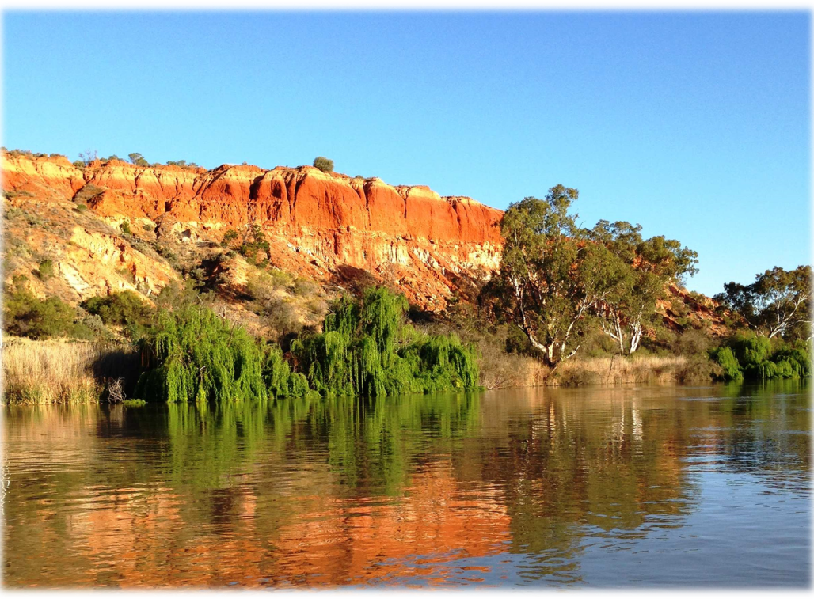
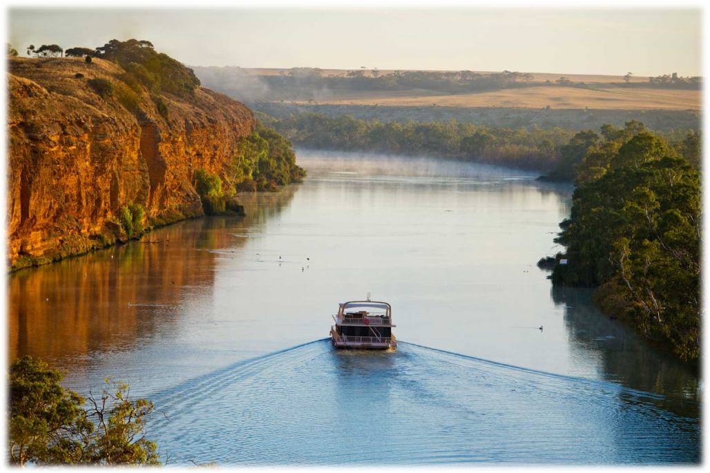
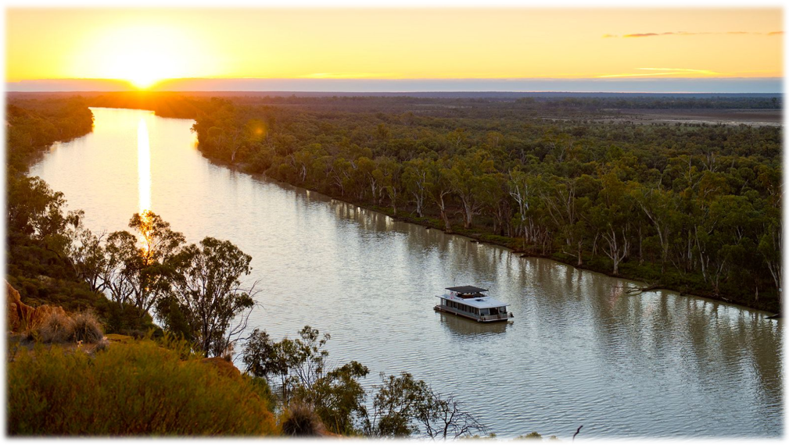
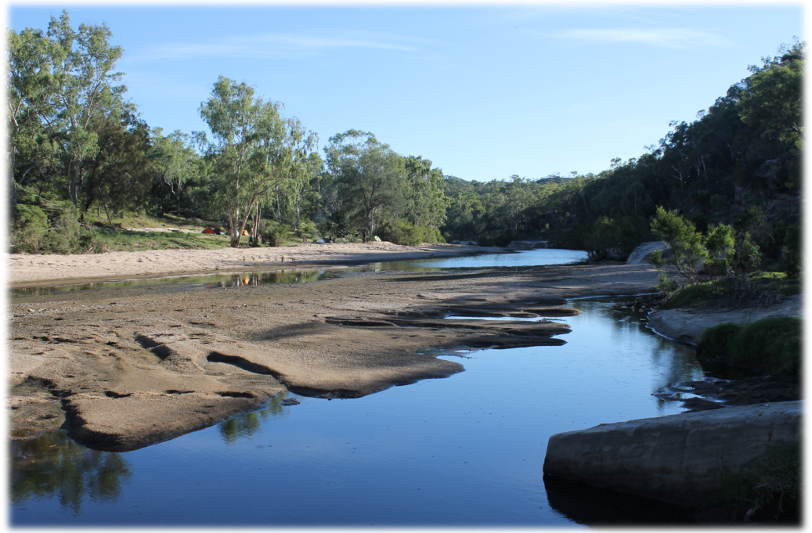
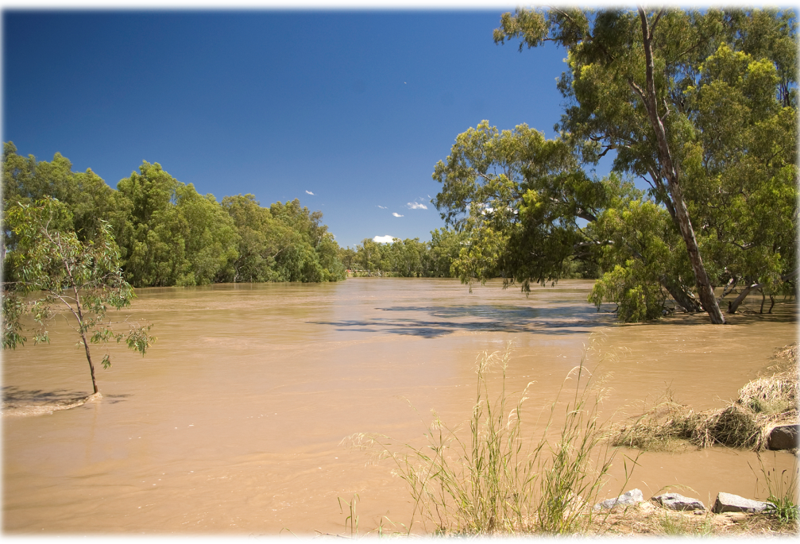
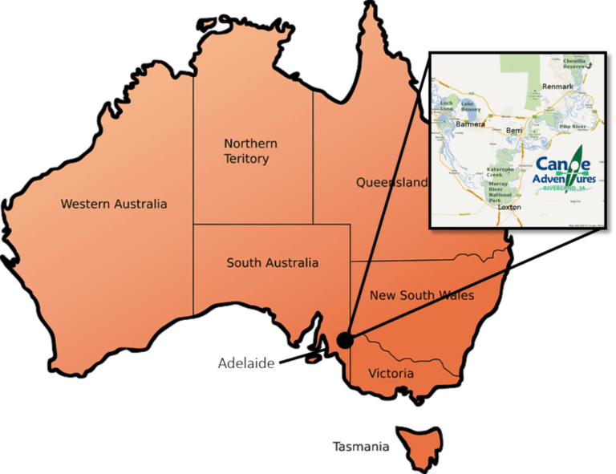
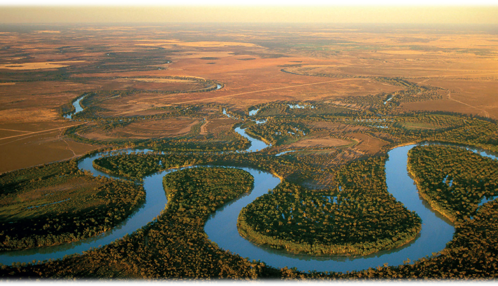
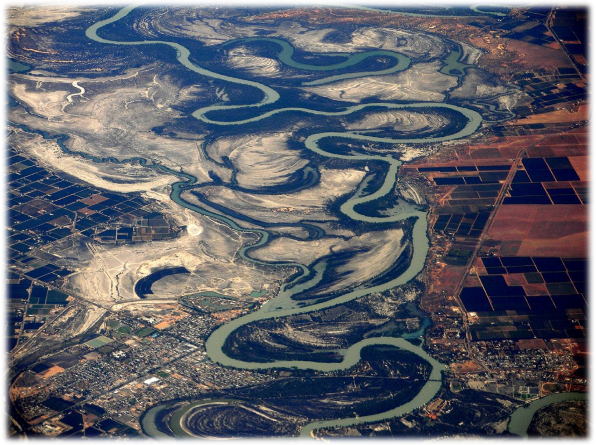
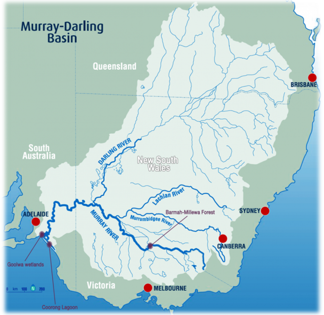
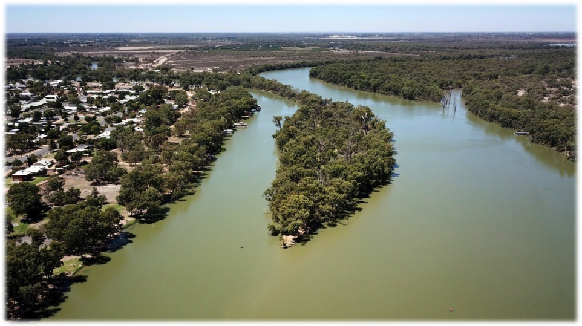

Австралия
Мюррей
Река Муррей — достояние Австралии, начинающееся в Австралийских Альпах — самых высоких горах на континенте. Это богатство природы, для австралийцев, играет большую роль, ведь Муррей является единственной крупной рекой на материке, ее длина 2375 километров. Площадь бассейна составляет чуть более 1 млн км². 78% годового стока, забирается на орошение близ лежащих земель, которые дают чуть менее половины всей сельскохозяйственной продукции.
Конечно она уступает своим коллегам из Европы, однако по меркам Австралии — это довольно большая водная жила. Главными притоками являются Дарлинг и Маррамбиджи, берущие свое начало в Голубых горах на севере континента. Другие наиболее крупные притоки: Лоддон, Лахлан, Голборн, Кампаспе.
Животный мир, на берегах Муррея, очень богат разнообразием. Здесь вы встретите, и «плюшевого» медведя коалу, и древесных кенгуру, и ядовитых змей. Большое количество птиц, населяют здешние леса, среди которых есть кукабарры, какаду и наземные казуары, известные своим агрессивным нравом и сильными шипованными ногами.
Река Муррей является судоходной, в отличие от ее главного притока Дарлинга. Теплоходы и мелкие суда, бороздят водную гладь на протяжении 2 000 километров, до самого Олбери — города, расположенного у подножья гор.
<Нажми меня, чтобы узнать больше>Маррамбиджи
Маррамбиджи — самый большой правый приток крупнейшей австралийской реки Муррей. Ее название в переводе с языка аборигенов племени вираджури означает «большая вода».Река начинается на западных отрогах Большого Водораздельного хребта, в той его части, что именуется Австралийскими Альпами, на территории национального парка Косцюшко. Ниже по течению протекает по равнинной юго-восточной части Австралии.
Притоков у реки много, и все они — также довольно непредсказуемы: то впадают в нее, то нет — зависит от сезона и количества осадков. Если осадков очень много, тогда случаются наводнения, и вода за короткое время поднимается на 10-12 м. Наводнение 1852 г. считается самой большой природной катастрофой в истории Австралии: вода смыла полностью городок Гуднагай вместе с жителями, и он был построен заново на более высоком месте.
Воды Маррамбиджи используются для орошения полей, которых, впрочем, не так уж и много. В бассейне реки находится около 2600 км2 орошаемых земель, используемых для пастбищ и виноградников, плантаций пшеницы, цитрусов, хлопка и риса. Плодородное междуречье Муррея и Маррамбиджи получило название Риверайна.Так как воды в этих краях всегда в обрез, местное население вынуждено заниматься еще и простым богарным земледелием: используется главным образом влага, получаемая почвой весной, для выращивания засухоустойчивых зерновых, кормовых и бахчевых растений.
В период дождей Маррамбиджи разливается. Тогда она становится судоходной в нижнем течении, и можно подняться от Муррея на 500 км до города Уогга-Уогга. Из всех австралийских рек только Муррей и Маррамбиджи сохраняют постоянное течение — кроме исключительно засушливых лет.
<Нажми меня, чтобы узнать больше>Дарлинг
Дарлинг — вторая по длине река Австралии после реки Мюррей. Вместе с Мурреем ее правый приток Дарлинг образует самую длинную в стране речную систему (3672 км) с бассейном площадью свыше 1 млн км2, что составляет около 14% площади Австралии.
Исток Дарлинга — на Большом Водораздельном хребте, на западных склонах хребта Нью-Ингленд, где берут начало образующие ее ручьи. Ручьи питают несколько рек — Северн, Думерик, Боган, Макинтайр, которые впадают в Баруон и Калгоа, а от места их соединения и начинается река под названием Дарлинг. Общее направление русла реки — на юго-запад. Протекает по полупустыне — плоской и засоленной территории, где дожди — нечастое явление. А так как река питается дождями, то большую часть года маловодна, а в сухой сезон в нижнем течении может и совсем пересохнуть, распадаясь на отдельные плесы.
Причина относительно малого количества дождей в том, что главный водораздел Австралии смещен на восток. Если выпадает уж очень засушливый год, тогда многие притоки не доходят до Дарлинга, превращаясь в высохшие канавы с каменистым дном, их, окаймленных эвкалиптами и кустарниками, аборигены называют биллабонгами. В засушливый сезон происходит и еще одно не очень приятное явление, прозванное австралийцами со свойственным им необычным юмором «дарлингским душем»: на самом деле — пыльная буря, накрывающая весь бассейн Дарлинга.
Летом с приходом дождей начинается паводок, река быстро выходит из берегов, ее уровень может подняться на 10-15 м. Тогда Дарлинг сам способствует образованию билла-бонгов: во время паводка река переносит огромное количество обломочного материала и отлагает его вдоль русла. Так образуются валы, препятствующие впадению притоков в главную реку.
<Нажми меня, чтобы узнать больше>